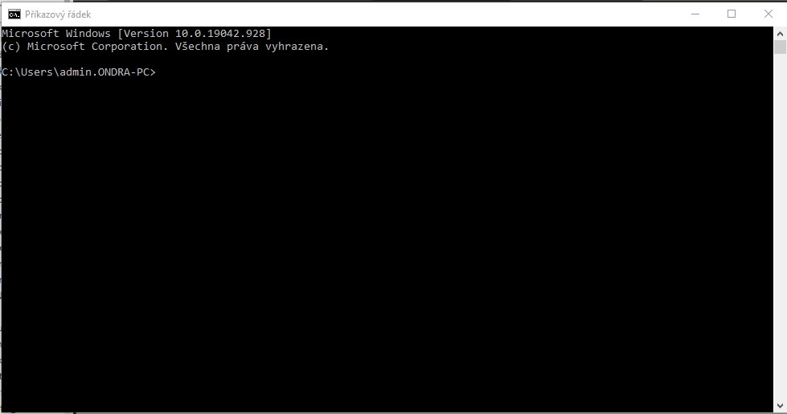

V Lekci 02 se seznámíme s pythononem a příkazovou řádkou.
Nejdříve otevřeme příkazovou řádku. Stiskneme kombinaci kláves Windows + R zadáme cmd a stiskneme ENTER.
Otevře se nám okno, které bude vypadat nějek takhle:
Těd si vytvoříme adresář na naše projekty.
cd X | Jde do adresáře X.
X: | Jde na disk X.
cd.. | Jde do nadřazeného adresáře (toho co obsahuje aktuální adresář).
dir | Vypíše soubory které obsahuje akt. adresář.
Pomocí těhto příkazů jdi do adresáře, kde chceš vytvořit adresář na projekty.
Bude se hodit příkaz md X, který vytvoří adresář X. (X je jméno adresáře)
Vytvoř adresář na projeky který se bude jmenovat např. jak-na-python. Jdi do něj.
Pusť python v interaktivní režimu, zadej příkaz python.
Vypíše se něco jako:
Python 3.9.2 (tags/v3.9.2:1a79785, Feb 19 2021, 13:44:55) [MSC v.1928 64 bit (AMD64)] on win32
Type "help", "copyright", "credits" or "license" for more information.
>>>
Těmi "třemi zobáčky" Python prosí o instrukce.
Tady ale nebudou fungovat příkazy příkazové řádky! Zkus to: zadej příkaz příkazové řádky (např. cd..) a stiskni ENTER. Vypíše se chybová hláška podobná tomuto:
File "stdin", line 1
cd..
^
SyntaxError: invalid syntax
Chybovou hlášku vypíše Python vždy, když bude nespokojený.
Python nám řekl, že:
chyba je na řádku 1
je to sémantická chyba
Nejdříve zkusíme matematiku v pythonu.
/ | dělení
* | násobení
- | odčítání
+ | sčítání
** | umocnění
a další...o těch později
Zkus to! Zadej např. 10**2 a stiskni ENTER. Funguje?